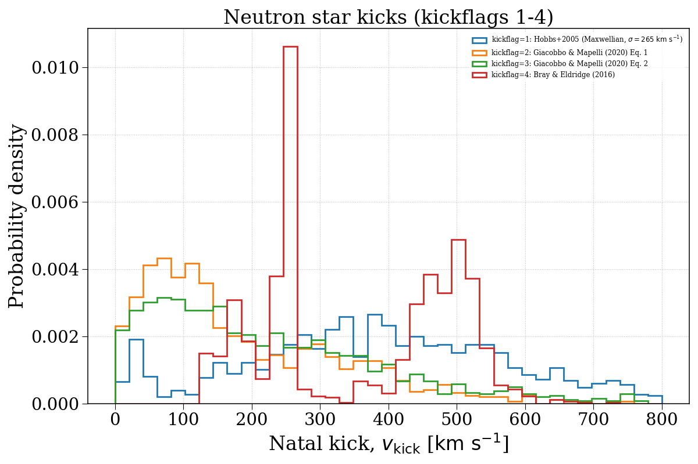
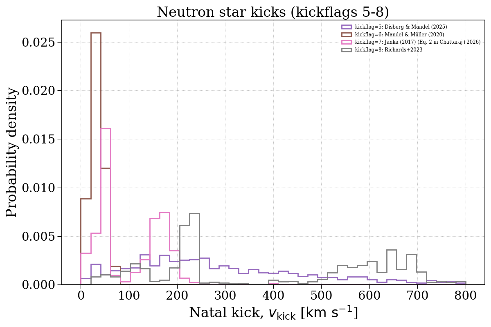
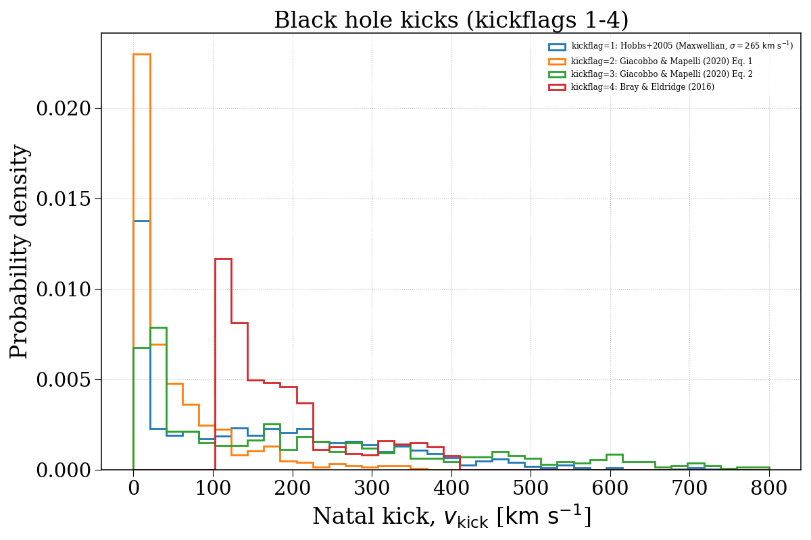
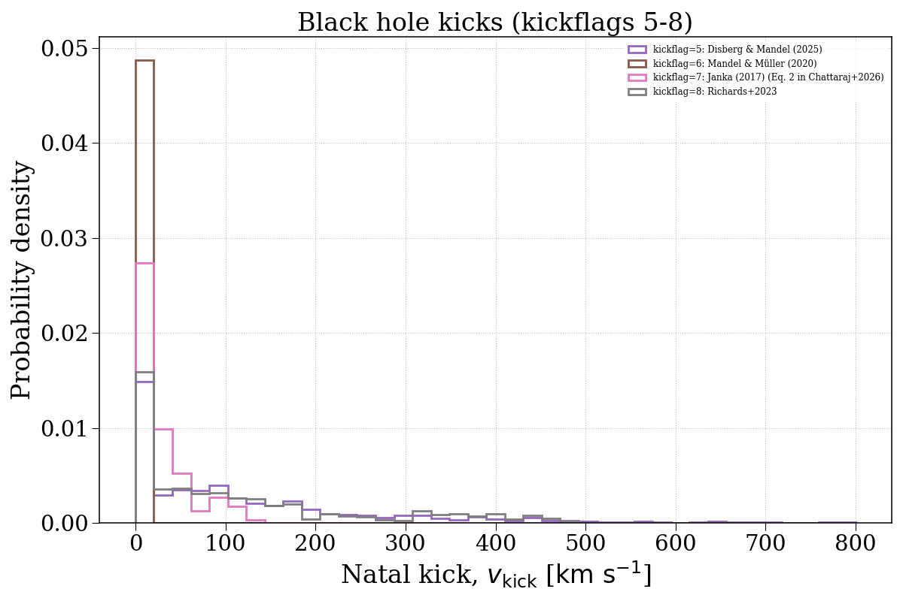

Note
Go to the end to download the full example code.
kickflag¶
This example demonstrates how changing the kickflag parameter can affect the natal kick velocity distributions of compact objects. We separate this into neutron stars and black holes.




Evolving population with kickflag = 1...
Evolving: 0%| | 0/2004 [00:00<?, ?sys/s]
Evolving: 1%| | 24/2004 [00:00<00:08, 237.99sys/s]
Evolving: 2%|▏ | 48/2004 [00:00<00:11, 167.94sys/s]
Evolving: 3%|▎ | 66/2004 [00:00<00:17, 109.69sys/s]
Evolving: 4%|▍ | 80/2004 [00:00<00:17, 108.85sys/s]
Evolving: 5%|▍ | 93/2004 [00:00<00:16, 112.45sys/s]
Evolving: 5%|▌ | 106/2004 [00:01<00:22, 85.94sys/s]
Evolving: 7%|▋ | 132/2004 [00:01<00:15, 121.66sys/s]
Evolving: 7%|▋ | 147/2004 [00:01<00:15, 121.03sys/s]
Evolving: 8%|▊ | 161/2004 [00:01<00:19, 95.65sys/s]
Evolving: 9%|▉ | 182/2004 [00:01<00:20, 87.26sys/s]
Evolving: 10%|█ | 209/2004 [00:01<00:17, 100.95sys/s]
Evolving: 12%|█▏ | 238/2004 [00:02<00:17, 102.80sys/s]
Evolving: 13%|█▎ | 267/2004 [00:02<00:13, 132.90sys/s]
Evolving: 14%|█▍ | 284/2004 [00:02<00:13, 131.08sys/s]
Evolving: 15%|█▍ | 300/2004 [00:02<00:15, 107.41sys/s]
Evolving: 16%|█▌ | 313/2004 [00:02<00:18, 92.21sys/s]
Evolving: 17%|█▋ | 334/2004 [00:03<00:14, 112.90sys/s]
Evolving: 17%|█▋ | 349/2004 [00:03<00:14, 116.90sys/s]
Evolving: 18%|█▊ | 366/2004 [00:03<00:12, 127.59sys/s]
Evolving: 19%|█▉ | 381/2004 [00:03<00:16, 98.19sys/s]
Evolving: 20%|█▉ | 393/2004 [00:03<00:17, 94.33sys/s]
Evolving: 21%|██ | 416/2004 [00:03<00:13, 121.41sys/s]
Evolving: 22%|██▏ | 433/2004 [00:03<00:12, 128.37sys/s]
Evolving: 22%|██▏ | 448/2004 [00:03<00:11, 132.52sys/s]
Evolving: 23%|██▎ | 463/2004 [00:04<00:14, 104.68sys/s]
Evolving: 24%|██▍ | 478/2004 [00:04<00:18, 83.13sys/s]
Evolving: 25%|██▌ | 504/2004 [00:04<00:13, 114.91sys/s]
Evolving: 26%|██▌ | 519/2004 [00:04<00:15, 98.43sys/s]
Evolving: 27%|██▋ | 537/2004 [00:04<00:16, 91.42sys/s]
Evolving: 27%|██▋ | 548/2004 [00:05<00:15, 92.95sys/s]
Evolving: 29%|██▉ | 578/2004 [00:05<00:14, 101.67sys/s]
Evolving: 30%|███ | 610/2004 [00:05<00:10, 137.04sys/s]
Evolving: 31%|███▏ | 627/2004 [00:05<00:10, 137.48sys/s]
Evolving: 32%|███▏ | 643/2004 [00:05<00:10, 131.30sys/s]
Evolving: 33%|███▎ | 661/2004 [00:05<00:09, 141.31sys/s]
Evolving: 34%|███▍ | 677/2004 [00:05<00:09, 139.05sys/s]
Evolving: 35%|███▍ | 692/2004 [00:06<00:09, 131.74sys/s]
Evolving: 35%|███▌ | 706/2004 [00:06<00:09, 132.97sys/s]
Evolving: 36%|███▌ | 721/2004 [00:06<00:09, 133.06sys/s]
Evolving: 37%|███▋ | 735/2004 [00:06<00:10, 124.17sys/s]
Evolving: 37%|███▋ | 748/2004 [00:06<00:13, 94.30sys/s]
Evolving: 39%|███▊ | 772/2004 [00:06<00:09, 123.43sys/s]
Evolving: 39%|███▉ | 787/2004 [00:06<00:11, 103.05sys/s]
Evolving: 40%|████ | 809/2004 [00:07<00:09, 125.13sys/s]
Evolving: 41%|████ | 824/2004 [00:07<00:09, 126.90sys/s]
Evolving: 42%|████▏ | 839/2004 [00:07<00:12, 93.09sys/s]
Evolving: 43%|████▎ | 864/2004 [00:07<00:09, 119.29sys/s]
Evolving: 44%|████▍ | 879/2004 [00:07<00:10, 106.01sys/s]
Evolving: 45%|████▍ | 894/2004 [00:08<00:12, 86.19sys/s]
Evolving: 46%|████▌ | 916/2004 [00:08<00:10, 102.80sys/s]
Evolving: 47%|████▋ | 932/2004 [00:08<00:09, 111.59sys/s]
Evolving: 47%|████▋ | 945/2004 [00:08<00:11, 93.93sys/s]
Evolving: 48%|████▊ | 968/2004 [00:08<00:08, 120.83sys/s]
Evolving: 49%|████▉ | 983/2004 [00:08<00:10, 97.96sys/s]
Evolving: 50%|█████ | 1003/2004 [00:08<00:08, 115.33sys/s]
Evolving: 51%|█████ | 1019/2004 [00:09<00:08, 122.37sys/s]
Evolving: 52%|█████▏ | 1034/2004 [00:09<00:10, 95.06sys/s]
Evolving: 53%|█████▎ | 1062/2004 [00:09<00:07, 125.73sys/s]
Evolving: 54%|█████▎ | 1077/2004 [00:09<00:09, 99.26sys/s]
Evolving: 55%|█████▍ | 1101/2004 [00:09<00:07, 125.01sys/s]
Evolving: 56%|█████▌ | 1117/2004 [00:09<00:07, 124.14sys/s]
Evolving: 56%|█████▋ | 1132/2004 [00:10<00:07, 119.88sys/s]
Evolving: 57%|█████▋ | 1146/2004 [00:10<00:08, 95.69sys/s]
Evolving: 58%|█████▊ | 1172/2004 [00:10<00:06, 127.07sys/s]
Evolving: 59%|█████▉ | 1188/2004 [00:10<00:06, 118.20sys/s]
Evolving: 60%|██████ | 1206/2004 [00:10<00:06, 129.65sys/s]
Evolving: 61%|██████ | 1221/2004 [00:10<00:05, 132.56sys/s]
Evolving: 62%|██████▏ | 1236/2004 [00:10<00:05, 132.95sys/s]
Evolving: 62%|██████▏ | 1251/2004 [00:11<00:05, 129.25sys/s]
Evolving: 63%|██████▎ | 1266/2004 [00:11<00:05, 125.98sys/s]
Evolving: 64%|██████▍ | 1283/2004 [00:11<00:05, 133.78sys/s]
Evolving: 65%|██████▍ | 1297/2004 [00:11<00:05, 131.95sys/s]
Evolving: 65%|██████▌ | 1311/2004 [00:11<00:05, 131.60sys/s]
Evolving: 66%|██████▌ | 1325/2004 [00:11<00:07, 90.64sys/s]
Evolving: 68%|██████▊ | 1354/2004 [00:11<00:04, 131.95sys/s]
Evolving: 68%|██████▊ | 1371/2004 [00:11<00:04, 133.97sys/s]
Evolving: 69%|██████▉ | 1387/2004 [00:12<00:04, 127.73sys/s]
Evolving: 70%|██████▉ | 1402/2004 [00:12<00:05, 113.63sys/s]
Evolving: 71%|███████ | 1419/2004 [00:12<00:04, 125.52sys/s]
Evolving: 72%|███████▏ | 1434/2004 [00:12<00:04, 129.42sys/s]
Evolving: 72%|███████▏ | 1448/2004 [00:12<00:05, 110.96sys/s]
Evolving: 73%|███████▎ | 1466/2004 [00:12<00:05, 92.21sys/s]
Evolving: 74%|███████▍ | 1482/2004 [00:13<00:05, 93.68sys/s]
Evolving: 75%|███████▌ | 1513/2004 [00:13<00:03, 136.25sys/s]
Evolving: 76%|███████▋ | 1530/2004 [00:13<00:04, 102.43sys/s]
Evolving: 77%|███████▋ | 1553/2004 [00:13<00:03, 122.54sys/s]
Evolving: 78%|███████▊ | 1572/2004 [00:13<00:03, 131.42sys/s]
Evolving: 79%|███████▉ | 1588/2004 [00:13<00:03, 136.01sys/s]
Evolving: 80%|████████ | 1604/2004 [00:13<00:02, 137.65sys/s]
Evolving: 81%|████████ | 1620/2004 [00:14<00:02, 132.12sys/s]
Evolving: 82%|████████▏ | 1635/2004 [00:14<00:02, 136.45sys/s]
Evolving: 82%|████████▏ | 1650/2004 [00:14<00:02, 121.77sys/s]
Evolving: 83%|████████▎ | 1670/2004 [00:14<00:02, 138.03sys/s]
Evolving: 84%|████████▍ | 1685/2004 [00:14<00:02, 138.45sys/s]
Evolving: 85%|████████▍ | 1700/2004 [00:14<00:02, 133.22sys/s]
Evolving: 86%|████████▌ | 1714/2004 [00:14<00:02, 130.28sys/s]
Evolving: 86%|████████▌ | 1728/2004 [00:14<00:02, 129.44sys/s]
Evolving: 87%|████████▋ | 1743/2004 [00:14<00:01, 133.17sys/s]
Evolving: 88%|████████▊ | 1757/2004 [00:15<00:01, 128.14sys/s]
Evolving: 88%|████████▊ | 1770/2004 [00:15<00:01, 128.27sys/s]
Evolving: 89%|████████▉ | 1785/2004 [00:15<00:01, 130.46sys/s]
Evolving: 90%|████████▉ | 1799/2004 [00:15<00:01, 109.38sys/s]
Evolving: 90%|█████████ | 1811/2004 [00:15<00:01, 100.70sys/s]
Evolving: 91%|█████████▏| 1829/2004 [00:15<00:01, 107.22sys/s]
Evolving: 92%|█████████▏| 1849/2004 [00:15<00:01, 125.63sys/s]
Evolving: 93%|█████████▎| 1863/2004 [00:16<00:01, 94.93sys/s]
Evolving: 94%|█████████▍| 1885/2004 [00:16<00:01, 94.41sys/s]
Evolving: 95%|█████████▍| 1901/2004 [00:16<00:01, 94.65sys/s]
Evolving: 96%|█████████▋| 1930/2004 [00:16<00:00, 130.78sys/s]
Evolving: 97%|█████████▋| 1946/2004 [00:16<00:00, 98.01sys/s]
Evolving: 98%|█████████▊| 1970/2004 [00:17<00:00, 120.78sys/s]
Evolving: 99%|█████████▉| 1986/2004 [00:17<00:00, 124.01sys/s]
Evolving: 100%|█████████▉| 2001/2004 [00:17<00:00, 127.76sys/s]
Evolving: 100%|██████████| 2004/2004 [00:17<00:00, 115.85sys/s]
[Time taken: 17.6380 seconds]
Evolving population with kickflag = 2...
Evolving: 0%| | 0/2004 [00:00<?, ?sys/s]
Evolving: 0%| | 8/2004 [00:00<00:27, 72.16sys/s]
Evolving: 1%| | 16/2004 [00:00<00:32, 60.87sys/s]
Evolving: 2%|▏ | 33/2004 [00:00<00:19, 99.79sys/s]
Evolving: 3%|▎ | 54/2004 [00:00<00:14, 136.56sys/s]
Evolving: 3%|▎ | 69/2004 [00:00<00:21, 91.24sys/s]
Evolving: 4%|▍ | 88/2004 [00:00<00:16, 113.03sys/s]
Evolving: 5%|▌ | 102/2004 [00:01<00:23, 79.70sys/s]
Evolving: 7%|▋ | 132/2004 [00:01<00:16, 114.59sys/s]
Evolving: 7%|▋ | 147/2004 [00:01<00:15, 118.99sys/s]
Evolving: 8%|▊ | 162/2004 [00:01<00:18, 97.95sys/s]
Evolving: 9%|▉ | 182/2004 [00:01<00:20, 88.34sys/s]
Evolving: 10%|█ | 209/2004 [00:02<00:17, 101.11sys/s]
Evolving: 12%|█▏ | 238/2004 [00:02<00:16, 106.58sys/s]
Evolving: 13%|█▎ | 262/2004 [00:02<00:13, 127.00sys/s]
Evolving: 14%|█▍ | 278/2004 [00:02<00:13, 132.03sys/s]
Evolving: 15%|█▍ | 293/2004 [00:02<00:17, 99.84sys/s]
Evolving: 15%|█▌ | 306/2004 [00:03<00:20, 84.64sys/s]
Evolving: 17%|█▋ | 338/2004 [00:03<00:13, 123.46sys/s]
Evolving: 18%|█▊ | 354/2004 [00:03<00:12, 127.88sys/s]
Evolving: 18%|█▊ | 370/2004 [00:03<00:12, 131.02sys/s]
Evolving: 19%|█▉ | 386/2004 [00:03<00:18, 87.98sys/s]
Evolving: 21%|██ | 416/2004 [00:03<00:13, 121.06sys/s]
Evolving: 22%|██▏ | 433/2004 [00:03<00:12, 124.20sys/s]
Evolving: 22%|██▏ | 449/2004 [00:04<00:11, 130.05sys/s]
Evolving: 23%|██▎ | 465/2004 [00:04<00:13, 111.40sys/s]
Evolving: 24%|██▍ | 479/2004 [00:04<00:17, 87.65sys/s]
Evolving: 25%|██▌ | 504/2004 [00:04<00:13, 110.77sys/s]
Evolving: 26%|██▌ | 518/2004 [00:04<00:14, 99.87sys/s]
Evolving: 27%|██▋ | 537/2004 [00:05<00:15, 92.40sys/s]
Evolving: 27%|██▋ | 548/2004 [00:05<00:15, 92.94sys/s]
Evolving: 29%|██▉ | 578/2004 [00:05<00:13, 102.71sys/s]
Evolving: 30%|███ | 608/2004 [00:05<00:10, 137.27sys/s]
Evolving: 31%|███ | 625/2004 [00:05<00:09, 140.07sys/s]
Evolving: 32%|███▏ | 641/2004 [00:05<00:09, 138.47sys/s]
Evolving: 33%|███▎ | 657/2004 [00:05<00:09, 138.81sys/s]
Evolving: 34%|███▎ | 672/2004 [00:06<00:10, 132.64sys/s]
Evolving: 34%|███▍ | 686/2004 [00:06<00:10, 129.39sys/s]
Evolving: 35%|███▍ | 701/2004 [00:06<00:09, 134.00sys/s]
Evolving: 36%|███▌ | 717/2004 [00:06<00:09, 129.67sys/s]
Evolving: 36%|███▋ | 731/2004 [00:06<00:10, 125.97sys/s]
Evolving: 37%|███▋ | 744/2004 [00:06<00:13, 93.11sys/s]
Evolving: 38%|███▊ | 769/2004 [00:06<00:09, 125.24sys/s]
Evolving: 39%|███▉ | 784/2004 [00:07<00:12, 97.18sys/s]
Evolving: 40%|████ | 810/2004 [00:07<00:09, 126.44sys/s]
Evolving: 41%|████ | 826/2004 [00:07<00:09, 127.98sys/s]
Evolving: 42%|████▏ | 841/2004 [00:07<00:11, 100.35sys/s]
Evolving: 43%|████▎ | 864/2004 [00:07<00:09, 121.99sys/s]
Evolving: 44%|████▍ | 879/2004 [00:07<00:10, 108.62sys/s]
Evolving: 45%|████▍ | 894/2004 [00:08<00:12, 87.65sys/s]
Evolving: 46%|████▌ | 916/2004 [00:08<00:10, 103.74sys/s]
Evolving: 46%|████▋ | 931/2004 [00:08<00:10, 106.57sys/s]
Evolving: 47%|████▋ | 943/2004 [00:08<00:11, 91.15sys/s]
Evolving: 48%|████▊ | 968/2004 [00:08<00:08, 121.83sys/s]
Evolving: 49%|████▉ | 983/2004 [00:08<00:10, 101.79sys/s]
Evolving: 50%|█████ | 1003/2004 [00:09<00:08, 115.78sys/s]
Evolving: 51%|█████ | 1019/2004 [00:09<00:08, 120.00sys/s]
Evolving: 52%|█████▏ | 1033/2004 [00:09<00:10, 95.65sys/s]
Evolving: 53%|█████▎ | 1063/2004 [00:09<00:07, 128.60sys/s]
Evolving: 54%|█████▍ | 1078/2004 [00:09<00:09, 101.71sys/s]
Evolving: 55%|█████▍ | 1094/2004 [00:09<00:08, 110.63sys/s]
Evolving: 56%|█████▌ | 1114/2004 [00:10<00:07, 123.28sys/s]
Evolving: 56%|█████▋ | 1129/2004 [00:10<00:06, 125.62sys/s]
Evolving: 57%|█████▋ | 1143/2004 [00:10<00:09, 94.63sys/s]
Evolving: 58%|█████▊ | 1172/2004 [00:10<00:06, 132.31sys/s]
Evolving: 59%|█████▉ | 1189/2004 [00:10<00:06, 122.90sys/s]
Evolving: 60%|██████ | 1205/2004 [00:10<00:06, 129.16sys/s]
Evolving: 61%|██████ | 1221/2004 [00:10<00:06, 130.13sys/s]
Evolving: 62%|██████▏ | 1236/2004 [00:10<00:05, 134.20sys/s]
Evolving: 62%|██████▏ | 1251/2004 [00:11<00:05, 134.30sys/s]
Evolving: 63%|██████▎ | 1266/2004 [00:11<00:05, 135.21sys/s]
Evolving: 64%|██████▍ | 1280/2004 [00:11<00:05, 135.91sys/s]
Evolving: 65%|██████▍ | 1294/2004 [00:11<00:05, 129.73sys/s]
Evolving: 65%|██████▌ | 1308/2004 [00:11<00:05, 132.10sys/s]
Evolving: 66%|██████▌ | 1322/2004 [00:11<00:05, 128.98sys/s]
Evolving: 67%|██████▋ | 1336/2004 [00:11<00:06, 109.90sys/s]
Evolving: 67%|██████▋ | 1351/2004 [00:11<00:05, 116.14sys/s]
Evolving: 68%|██████▊ | 1369/2004 [00:12<00:04, 131.32sys/s]
Evolving: 69%|██████▉ | 1383/2004 [00:12<00:05, 121.83sys/s]
Evolving: 70%|██████▉ | 1396/2004 [00:12<00:05, 104.26sys/s]
Evolving: 71%|███████ | 1418/2004 [00:12<00:04, 128.96sys/s]
Evolving: 72%|███████▏ | 1433/2004 [00:12<00:04, 131.57sys/s]
Evolving: 72%|███████▏ | 1447/2004 [00:12<00:04, 127.32sys/s]
Evolving: 73%|███████▎ | 1461/2004 [00:12<00:04, 119.75sys/s]
Evolving: 74%|███████▎ | 1474/2004 [00:13<00:05, 102.11sys/s]
Evolving: 74%|███████▍ | 1485/2004 [00:13<00:05, 90.86sys/s]
Evolving: 76%|███████▌ | 1515/2004 [00:13<00:03, 128.47sys/s]
Evolving: 76%|███████▋ | 1529/2004 [00:13<00:04, 98.02sys/s]
Evolving: 77%|███████▋ | 1553/2004 [00:13<00:03, 120.82sys/s]
Evolving: 78%|███████▊ | 1572/2004 [00:13<00:03, 135.21sys/s]
Evolving: 79%|███████▉ | 1588/2004 [00:13<00:03, 136.25sys/s]
Evolving: 80%|███████▉ | 1603/2004 [00:13<00:02, 138.79sys/s]
Evolving: 81%|████████ | 1618/2004 [00:14<00:02, 131.09sys/s]
Evolving: 82%|████████▏ | 1635/2004 [00:14<00:02, 139.72sys/s]
Evolving: 82%|████████▏ | 1650/2004 [00:14<00:02, 131.99sys/s]
Evolving: 83%|████████▎ | 1664/2004 [00:14<00:02, 131.04sys/s]
Evolving: 84%|████████▍ | 1680/2004 [00:14<00:02, 137.43sys/s]
Evolving: 85%|████████▍ | 1695/2004 [00:14<00:02, 135.00sys/s]
Evolving: 85%|████████▌ | 1709/2004 [00:14<00:02, 133.59sys/s]
Evolving: 86%|████████▌ | 1723/2004 [00:14<00:02, 131.86sys/s]
Evolving: 87%|████████▋ | 1738/2004 [00:15<00:01, 134.76sys/s]
Evolving: 87%|████████▋ | 1753/2004 [00:15<00:01, 132.49sys/s]
Evolving: 88%|████████▊ | 1767/2004 [00:15<00:01, 134.23sys/s]
Evolving: 89%|████████▉ | 1781/2004 [00:15<00:01, 126.20sys/s]
Evolving: 90%|████████▉ | 1794/2004 [00:15<00:02, 96.57sys/s]
Evolving: 90%|█████████ | 1805/2004 [00:15<00:02, 93.83sys/s]
Evolving: 91%|█████████▏| 1829/2004 [00:15<00:01, 118.35sys/s]
Evolving: 92%|█████████▏| 1847/2004 [00:15<00:01, 130.95sys/s]
Evolving: 93%|█████████▎| 1861/2004 [00:16<00:01, 132.54sys/s]
Evolving: 94%|█████████▎| 1875/2004 [00:16<00:01, 117.33sys/s]
Evolving: 94%|█████████▍| 1888/2004 [00:16<00:01, 90.15sys/s]
Evolving: 95%|█████████▍| 1901/2004 [00:16<00:01, 81.54sys/s]
Evolving: 96%|█████████▋| 1931/2004 [00:16<00:00, 94.21sys/s]
Evolving: 97%|█████████▋| 1952/2004 [00:16<00:00, 114.17sys/s]
Evolving: 98%|█████████▊| 1966/2004 [00:17<00:00, 118.65sys/s]
Evolving: 99%|█████████▉| 1980/2004 [00:17<00:00, 117.61sys/s]
Evolving: 100%|█████████▉| 1999/2004 [00:17<00:00, 133.57sys/s]
Evolving: 100%|██████████| 2004/2004 [00:17<00:00, 115.53sys/s]
[Time taken: 17.5376 seconds]
Evolving population with kickflag = 3...
Evolving: 0%| | 0/2004 [00:00<?, ?sys/s]
Evolving: 0%| | 8/2004 [00:00<00:26, 74.86sys/s]
Evolving: 1%| | 16/2004 [00:00<00:31, 62.63sys/s]
Evolving: 2%|▏ | 33/2004 [00:00<00:20, 98.48sys/s]
Evolving: 3%|▎ | 52/2004 [00:00<00:15, 130.08sys/s]
Evolving: 3%|▎ | 66/2004 [00:00<00:19, 98.55sys/s]
Evolving: 4%|▍ | 78/2004 [00:00<00:19, 96.31sys/s]
Evolving: 5%|▍ | 93/2004 [00:00<00:17, 107.94sys/s]
Evolving: 5%|▌ | 105/2004 [00:01<00:23, 80.58sys/s]
Evolving: 7%|▋ | 133/2004 [00:01<00:15, 120.81sys/s]
Evolving: 7%|▋ | 148/2004 [00:01<00:15, 117.15sys/s]
Evolving: 8%|▊ | 162/2004 [00:01<00:18, 99.15sys/s]
Evolving: 9%|▉ | 182/2004 [00:01<00:21, 86.27sys/s]
Evolving: 10%|█ | 209/2004 [00:02<00:17, 102.44sys/s]
Evolving: 12%|█▏ | 237/2004 [00:02<00:13, 131.81sys/s]
Evolving: 13%|█▎ | 253/2004 [00:02<00:14, 124.46sys/s]
Evolving: 13%|█▎ | 268/2004 [00:02<00:15, 113.07sys/s]
Evolving: 14%|█▍ | 285/2004 [00:02<00:18, 93.58sys/s]
Evolving: 15%|█▌ | 302/2004 [00:03<00:20, 84.75sys/s]
Evolving: 17%|█▋ | 333/2004 [00:03<00:13, 121.30sys/s]
Evolving: 17%|█▋ | 349/2004 [00:03<00:12, 128.68sys/s]
Evolving: 18%|█▊ | 365/2004 [00:03<00:12, 127.28sys/s]
Evolving: 19%|█▉ | 380/2004 [00:03<00:15, 101.78sys/s]
Evolving: 20%|█▉ | 393/2004 [00:03<00:16, 100.53sys/s]
Evolving: 21%|██ | 416/2004 [00:03<00:12, 124.84sys/s]
Evolving: 22%|██▏ | 432/2004 [00:03<00:12, 130.09sys/s]
Evolving: 22%|██▏ | 448/2004 [00:04<00:11, 134.43sys/s]
Evolving: 23%|██▎ | 463/2004 [00:04<00:14, 106.32sys/s]
Evolving: 24%|██▍ | 478/2004 [00:04<00:16, 90.89sys/s]
Evolving: 25%|██▌ | 504/2004 [00:04<00:13, 114.46sys/s]
Evolving: 26%|██▌ | 517/2004 [00:04<00:15, 96.46sys/s]
Evolving: 27%|██▋ | 537/2004 [00:05<00:16, 90.94sys/s]
Evolving: 28%|██▊ | 566/2004 [00:05<00:11, 122.74sys/s]
Evolving: 29%|██▉ | 581/2004 [00:05<00:14, 99.82sys/s]
Evolving: 30%|███ | 610/2004 [00:05<00:10, 134.05sys/s]
Evolving: 31%|███▏ | 628/2004 [00:05<00:10, 128.34sys/s]
Evolving: 32%|███▏ | 644/2004 [00:05<00:10, 131.19sys/s]
Evolving: 33%|███▎ | 662/2004 [00:05<00:10, 133.40sys/s]
Evolving: 34%|███▍ | 678/2004 [00:06<00:09, 134.32sys/s]
Evolving: 35%|███▍ | 693/2004 [00:06<00:10, 124.79sys/s]
Evolving: 35%|███▌ | 710/2004 [00:06<00:09, 131.86sys/s]
Evolving: 36%|███▌ | 726/2004 [00:06<00:10, 122.53sys/s]
Evolving: 37%|███▋ | 739/2004 [00:06<00:13, 91.37sys/s]
Evolving: 38%|███▊ | 770/2004 [00:06<00:09, 130.19sys/s]
Evolving: 39%|███▉ | 786/2004 [00:07<00:11, 106.03sys/s]
Evolving: 40%|████ | 808/2004 [00:07<00:09, 124.74sys/s]
Evolving: 41%|████ | 823/2004 [00:07<00:09, 126.52sys/s]
Evolving: 42%|████▏ | 838/2004 [00:07<00:12, 95.26sys/s]
Evolving: 43%|████▎ | 864/2004 [00:07<00:09, 122.75sys/s]
Evolving: 44%|████▍ | 879/2004 [00:07<00:10, 109.46sys/s]
Evolving: 45%|████▍ | 894/2004 [00:08<00:12, 86.75sys/s]
Evolving: 46%|████▌ | 916/2004 [00:08<00:10, 103.98sys/s]
Evolving: 47%|████▋ | 932/2004 [00:08<00:09, 110.90sys/s]
Evolving: 47%|████▋ | 945/2004 [00:08<00:11, 93.91sys/s]
Evolving: 48%|████▊ | 969/2004 [00:08<00:08, 117.88sys/s]
Evolving: 49%|████▉ | 983/2004 [00:08<00:09, 102.38sys/s]
Evolving: 50%|█████ | 1003/2004 [00:09<00:08, 115.90sys/s]
Evolving: 51%|█████ | 1019/2004 [00:09<00:08, 122.34sys/s]
Evolving: 52%|█████▏ | 1033/2004 [00:09<00:10, 94.59sys/s]
Evolving: 53%|█████▎ | 1062/2004 [00:09<00:07, 130.46sys/s]
Evolving: 54%|█████▍ | 1078/2004 [00:09<00:09, 101.78sys/s]
Evolving: 55%|█████▍ | 1094/2004 [00:09<00:08, 110.44sys/s]
Evolving: 55%|█████▌ | 1112/2004 [00:10<00:07, 123.46sys/s]
Evolving: 56%|█████▌ | 1127/2004 [00:10<00:06, 126.75sys/s]
Evolving: 57%|█████▋ | 1142/2004 [00:10<00:09, 90.76sys/s]
Evolving: 58%|█████▊ | 1170/2004 [00:10<00:06, 125.43sys/s]
Evolving: 59%|█████▉ | 1186/2004 [00:10<00:06, 127.30sys/s]
Evolving: 60%|█████▉ | 1202/2004 [00:10<00:06, 125.80sys/s]
Evolving: 61%|██████ | 1217/2004 [00:10<00:06, 124.65sys/s]
Evolving: 61%|██████▏ | 1232/2004 [00:10<00:06, 127.52sys/s]
Evolving: 62%|██████▏ | 1246/2004 [00:11<00:06, 120.32sys/s]
Evolving: 63%|██████▎ | 1260/2004 [00:11<00:06, 123.53sys/s]
Evolving: 64%|██████▎ | 1277/2004 [00:11<00:05, 131.15sys/s]
Evolving: 64%|██████▍ | 1291/2004 [00:11<00:05, 132.65sys/s]
Evolving: 65%|██████▌ | 1305/2004 [00:11<00:05, 131.17sys/s]
Evolving: 66%|██████▌ | 1319/2004 [00:11<00:05, 126.36sys/s]
Evolving: 66%|██████▋ | 1332/2004 [00:11<00:06, 102.39sys/s]
Evolving: 68%|██████▊ | 1355/2004 [00:11<00:05, 128.99sys/s]
Evolving: 68%|██████▊ | 1369/2004 [00:12<00:04, 130.55sys/s]
Evolving: 69%|██████▉ | 1383/2004 [00:12<00:05, 119.74sys/s]
Evolving: 70%|██████▉ | 1396/2004 [00:12<00:05, 102.22sys/s]
Evolving: 71%|███████ | 1422/2004 [00:12<00:04, 130.41sys/s]
Evolving: 72%|███████▏ | 1436/2004 [00:12<00:04, 131.38sys/s]
Evolving: 72%|███████▏ | 1450/2004 [00:12<00:04, 123.00sys/s]
Evolving: 73%|███████▎ | 1466/2004 [00:13<00:05, 93.39sys/s]
Evolving: 74%|███████▍ | 1482/2004 [00:13<00:05, 99.65sys/s]
Evolving: 75%|███████▌ | 1509/2004 [00:13<00:03, 133.63sys/s]
Evolving: 76%|███████▌ | 1525/2004 [00:13<00:05, 94.74sys/s]
Evolving: 77%|███████▋ | 1553/2004 [00:13<00:03, 124.80sys/s]
Evolving: 78%|███████▊ | 1571/2004 [00:13<00:03, 131.43sys/s]
Evolving: 79%|███████▉ | 1587/2004 [00:13<00:03, 135.50sys/s]
Evolving: 80%|███████▉ | 1603/2004 [00:14<00:02, 137.83sys/s]
Evolving: 81%|████████ | 1619/2004 [00:14<00:02, 133.40sys/s]
Evolving: 82%|████████▏ | 1634/2004 [00:14<00:02, 134.17sys/s]
Evolving: 82%|████████▏ | 1649/2004 [00:14<00:02, 128.67sys/s]
Evolving: 83%|████████▎ | 1665/2004 [00:14<00:02, 134.99sys/s]
Evolving: 84%|████████▍ | 1679/2004 [00:14<00:02, 136.05sys/s]
Evolving: 84%|████████▍ | 1693/2004 [00:14<00:02, 129.39sys/s]
Evolving: 85%|████████▌ | 1710/2004 [00:14<00:02, 135.90sys/s]
Evolving: 86%|████████▌ | 1725/2004 [00:14<00:02, 137.13sys/s]
Evolving: 87%|████████▋ | 1740/2004 [00:15<00:01, 134.99sys/s]
Evolving: 88%|████████▊ | 1754/2004 [00:15<00:01, 131.96sys/s]
Evolving: 88%|████████▊ | 1769/2004 [00:15<00:01, 136.66sys/s]
Evolving: 89%|████████▉ | 1783/2004 [00:15<00:01, 132.70sys/s]
Evolving: 90%|████████▉ | 1797/2004 [00:15<00:01, 104.10sys/s]
Evolving: 90%|█████████ | 1809/2004 [00:15<00:01, 98.54sys/s]
Evolving: 91%|█████████ | 1828/2004 [00:15<00:01, 119.79sys/s]
Evolving: 92%|█████████▏| 1842/2004 [00:15<00:01, 122.14sys/s]
Evolving: 93%|█████████▎| 1858/2004 [00:16<00:01, 120.13sys/s]
Evolving: 93%|█████████▎| 1871/2004 [00:16<00:01, 102.21sys/s]
Evolving: 94%|█████████▍| 1885/2004 [00:16<00:01, 86.83sys/s]
Evolving: 95%|█████████▍| 1901/2004 [00:16<00:01, 89.93sys/s]
Evolving: 96%|█████████▋| 1931/2004 [00:16<00:00, 92.26sys/s]
Evolving: 98%|█████████▊| 1958/2004 [00:17<00:00, 122.18sys/s]
Evolving: 98%|█████████▊| 1973/2004 [00:17<00:00, 124.36sys/s]
Evolving: 99%|█████████▉| 1988/2004 [00:17<00:00, 122.18sys/s]
Evolving: 100%|██████████| 2004/2004 [00:17<00:00, 115.09sys/s]
[Time taken: 17.5940 seconds]
Evolving population with kickflag = 4...
Evolving: 0%| | 0/2004 [00:00<?, ?sys/s]
Evolving: 0%| | 4/2004 [00:00<00:52, 37.92sys/s]
Evolving: 1%| | 12/2004 [00:00<00:40, 49.67sys/s]
Evolving: 2%|▏ | 33/2004 [00:00<00:18, 106.33sys/s]
Evolving: 3%|▎ | 55/2004 [00:00<00:14, 136.67sys/s]
Evolving: 3%|▎ | 69/2004 [00:00<00:20, 96.27sys/s]
Evolving: 4%|▍ | 88/2004 [00:00<00:16, 118.72sys/s]
Evolving: 5%|▌ | 102/2004 [00:01<00:24, 77.82sys/s]
Evolving: 7%|▋ | 134/2004 [00:01<00:15, 122.26sys/s]
Evolving: 8%|▊ | 152/2004 [00:01<00:15, 121.17sys/s]
Evolving: 8%|▊ | 168/2004 [00:01<00:16, 109.96sys/s]
Evolving: 9%|▉ | 182/2004 [00:01<00:21, 85.79sys/s]
Evolving: 10%|█ | 209/2004 [00:02<00:18, 97.42sys/s]
Evolving: 12%|█▏ | 238/2004 [00:02<00:16, 105.38sys/s]
Evolving: 13%|█▎ | 266/2004 [00:02<00:13, 133.60sys/s]
Evolving: 14%|█▍ | 283/2004 [00:02<00:12, 132.55sys/s]
Evolving: 15%|█▍ | 299/2004 [00:02<00:16, 101.22sys/s]
Evolving: 16%|█▌ | 312/2004 [00:03<00:17, 94.51sys/s]
Evolving: 17%|█▋ | 334/2004 [00:03<00:14, 116.35sys/s]
Evolving: 17%|█▋ | 350/2004 [00:03<00:13, 121.07sys/s]
Evolving: 18%|█▊ | 366/2004 [00:03<00:13, 124.83sys/s]
Evolving: 19%|█▉ | 380/2004 [00:03<00:17, 92.62sys/s]
Evolving: 20%|██ | 403/2004 [00:03<00:13, 116.45sys/s]
Evolving: 21%|██ | 418/2004 [00:03<00:13, 120.46sys/s]
Evolving: 22%|██▏ | 433/2004 [00:03<00:12, 125.93sys/s]
Evolving: 22%|██▏ | 447/2004 [00:04<00:12, 125.96sys/s]
Evolving: 23%|██▎ | 461/2004 [00:04<00:14, 103.39sys/s]
Evolving: 24%|██▍ | 478/2004 [00:04<00:18, 80.94sys/s]
Evolving: 25%|██▌ | 504/2004 [00:04<00:13, 111.38sys/s]
Evolving: 26%|██▌ | 519/2004 [00:04<00:14, 99.60sys/s]
Evolving: 27%|██▋ | 537/2004 [00:05<00:16, 91.35sys/s]
Evolving: 27%|██▋ | 548/2004 [00:05<00:16, 87.77sys/s]
Evolving: 29%|██▉ | 578/2004 [00:05<00:13, 104.61sys/s]
Evolving: 30%|███ | 611/2004 [00:05<00:10, 138.47sys/s]
Evolving: 31%|███▏ | 627/2004 [00:05<00:10, 136.00sys/s]
Evolving: 32%|███▏ | 643/2004 [00:05<00:10, 133.49sys/s]
Evolving: 33%|███▎ | 661/2004 [00:05<00:09, 141.70sys/s]
Evolving: 34%|███▎ | 676/2004 [00:06<00:09, 141.62sys/s]
Evolving: 34%|███▍ | 691/2004 [00:06<00:09, 133.27sys/s]
Evolving: 35%|███▌ | 706/2004 [00:06<00:09, 135.81sys/s]
Evolving: 36%|███▌ | 721/2004 [00:06<00:09, 137.33sys/s]
Evolving: 37%|███▋ | 735/2004 [00:06<00:10, 126.57sys/s]
Evolving: 37%|███▋ | 748/2004 [00:06<00:12, 100.52sys/s]
Evolving: 38%|███▊ | 770/2004 [00:06<00:10, 121.18sys/s]
Evolving: 39%|███▉ | 784/2004 [00:07<00:12, 99.15sys/s]
Evolving: 40%|████ | 807/2004 [00:07<00:09, 123.91sys/s]
Evolving: 41%|████ | 822/2004 [00:07<00:09, 122.54sys/s]
Evolving: 42%|████▏ | 836/2004 [00:07<00:11, 97.83sys/s]
Evolving: 43%|████▎ | 860/2004 [00:07<00:09, 123.44sys/s]
Evolving: 44%|████▎ | 875/2004 [00:07<00:10, 102.91sys/s]
Evolving: 45%|████▍ | 894/2004 [00:08<00:12, 90.21sys/s]
Evolving: 46%|████▌ | 916/2004 [00:08<00:10, 105.42sys/s]
Evolving: 47%|████▋ | 932/2004 [00:08<00:09, 113.45sys/s]
Evolving: 47%|████▋ | 945/2004 [00:08<00:11, 95.89sys/s]
Evolving: 48%|████▊ | 968/2004 [00:08<00:08, 116.04sys/s]
Evolving: 49%|████▉ | 981/2004 [00:08<00:10, 98.79sys/s]
Evolving: 50%|█████ | 1003/2004 [00:09<00:08, 119.88sys/s]
Evolving: 51%|█████ | 1019/2004 [00:09<00:07, 127.12sys/s]
Evolving: 52%|█████▏ | 1034/2004 [00:09<00:09, 103.10sys/s]
Evolving: 53%|█████▎ | 1058/2004 [00:09<00:07, 128.70sys/s]
Evolving: 54%|█████▎ | 1073/2004 [00:09<00:09, 96.85sys/s]
Evolving: 55%|█████▍ | 1094/2004 [00:09<00:08, 109.69sys/s]
Evolving: 56%|█████▌ | 1114/2004 [00:09<00:07, 126.53sys/s]
Evolving: 56%|█████▋ | 1129/2004 [00:10<00:06, 126.62sys/s]
Evolving: 57%|█████▋ | 1144/2004 [00:10<00:08, 97.87sys/s]
Evolving: 58%|█████▊ | 1170/2004 [00:10<00:06, 129.16sys/s]
Evolving: 59%|█████▉ | 1187/2004 [00:10<00:07, 116.37sys/s]
Evolving: 60%|██████ | 1211/2004 [00:10<00:05, 132.90sys/s]
Evolving: 61%|██████ | 1227/2004 [00:10<00:06, 126.26sys/s]
Evolving: 62%|██████▏ | 1241/2004 [00:11<00:06, 125.26sys/s]
Evolving: 63%|██████▎ | 1260/2004 [00:11<00:05, 138.37sys/s]
Evolving: 64%|██████▎ | 1275/2004 [00:11<00:05, 136.97sys/s]
Evolving: 64%|██████▍ | 1290/2004 [00:11<00:05, 135.38sys/s]
Evolving: 65%|██████▌ | 1304/2004 [00:11<00:05, 135.42sys/s]
Evolving: 66%|██████▌ | 1318/2004 [00:11<00:05, 116.05sys/s]
Evolving: 66%|██████▋ | 1331/2004 [00:11<00:06, 107.13sys/s]
Evolving: 67%|██████▋ | 1352/2004 [00:11<00:04, 131.47sys/s]
Evolving: 68%|██████▊ | 1367/2004 [00:11<00:04, 133.42sys/s]
Evolving: 69%|██████▉ | 1382/2004 [00:12<00:05, 120.00sys/s]
Evolving: 70%|██████▉ | 1395/2004 [00:12<00:06, 101.37sys/s]
Evolving: 71%|███████ | 1420/2004 [00:12<00:04, 130.65sys/s]
Evolving: 72%|███████▏ | 1435/2004 [00:12<00:04, 135.08sys/s]
Evolving: 72%|███████▏ | 1450/2004 [00:12<00:04, 119.98sys/s]
Evolving: 73%|███████▎ | 1466/2004 [00:12<00:05, 96.00sys/s]
Evolving: 74%|███████▍ | 1482/2004 [00:13<00:05, 98.54sys/s]
Evolving: 75%|███████▌ | 1511/2004 [00:13<00:03, 134.22sys/s]
Evolving: 76%|███████▌ | 1527/2004 [00:13<00:04, 98.39sys/s]
Evolving: 77%|███████▋ | 1553/2004 [00:13<00:03, 123.09sys/s]
Evolving: 79%|███████▊ | 1574/2004 [00:13<00:03, 136.68sys/s]
Evolving: 79%|███████▉ | 1591/2004 [00:13<00:02, 138.50sys/s]
Evolving: 80%|████████ | 1607/2004 [00:13<00:02, 139.64sys/s]
Evolving: 81%|████████ | 1623/2004 [00:14<00:02, 134.26sys/s]
Evolving: 82%|████████▏ | 1638/2004 [00:14<00:02, 136.95sys/s]
Evolving: 82%|████████▏ | 1653/2004 [00:14<00:02, 134.21sys/s]
Evolving: 83%|████████▎ | 1667/2004 [00:14<00:02, 135.21sys/s]
Evolving: 84%|████████▍ | 1681/2004 [00:14<00:02, 129.42sys/s]
Evolving: 85%|████████▍ | 1695/2004 [00:14<00:02, 128.53sys/s]
Evolving: 85%|████████▌ | 1711/2004 [00:14<00:02, 128.24sys/s]
Evolving: 86%|████████▌ | 1728/2004 [00:14<00:02, 123.71sys/s]
Evolving: 87%|████████▋ | 1746/2004 [00:15<00:01, 137.86sys/s]
Evolving: 88%|████████▊ | 1761/2004 [00:15<00:01, 134.41sys/s]
Evolving: 89%|████████▊ | 1775/2004 [00:15<00:01, 133.40sys/s]
Evolving: 89%|████████▉ | 1789/2004 [00:15<00:01, 130.95sys/s]
Evolving: 90%|████████▉ | 1803/2004 [00:15<00:02, 86.17sys/s]
Evolving: 91%|█████████▏| 1829/2004 [00:15<00:01, 110.80sys/s]
Evolving: 92%|█████████▏| 1844/2004 [00:15<00:01, 118.13sys/s]
Evolving: 93%|█████████▎| 1861/2004 [00:16<00:01, 125.43sys/s]
Evolving: 94%|█████████▎| 1875/2004 [00:16<00:01, 117.04sys/s]
Evolving: 94%|█████████▍| 1888/2004 [00:16<00:01, 90.03sys/s]
Evolving: 95%|█████████▍| 1901/2004 [00:16<00:01, 88.43sys/s]
Evolving: 96%|█████████▋| 1931/2004 [00:16<00:00, 95.65sys/s]
Evolving: 98%|█████████▊| 1957/2004 [00:16<00:00, 123.79sys/s]
Evolving: 98%|█████████▊| 1972/2004 [00:17<00:00, 121.06sys/s]
Evolving: 99%|█████████▉| 1986/2004 [00:17<00:00, 124.63sys/s]
Evolving: 100%|█████████▉| 2000/2004 [00:17<00:00, 127.35sys/s]
Evolving: 100%|██████████| 2004/2004 [00:17<00:00, 115.75sys/s]
[Time taken: 17.4940 seconds]
Evolving population with kickflag = 5...
Evolving: 0%| | 0/2004 [00:00<?, ?sys/s]
Evolving: 0%| | 3/2004 [00:00<01:21, 24.62sys/s]
Evolving: 1%| | 12/2004 [00:00<00:44, 44.84sys/s]
Evolving: 2%|▏ | 40/2004 [00:00<00:15, 130.87sys/s]
Evolving: 3%|▎ | 56/2004 [00:00<00:14, 133.26sys/s]
Evolving: 4%|▎ | 71/2004 [00:00<00:20, 93.05sys/s]
Evolving: 4%|▍ | 88/2004 [00:00<00:17, 108.21sys/s]
Evolving: 5%|▌ | 101/2004 [00:01<00:25, 74.57sys/s]
Evolving: 7%|▋ | 133/2004 [00:01<00:15, 119.68sys/s]
Evolving: 7%|▋ | 150/2004 [00:01<00:15, 119.44sys/s]
Evolving: 8%|▊ | 166/2004 [00:01<00:17, 104.09sys/s]
Evolving: 9%|▉ | 180/2004 [00:01<00:16, 110.50sys/s]
Evolving: 10%|▉ | 194/2004 [00:01<00:17, 102.15sys/s]
Evolving: 10%|█ | 209/2004 [00:02<00:19, 89.96sys/s]
Evolving: 12%|█▏ | 238/2004 [00:02<00:17, 101.60sys/s]
Evolving: 13%|█▎ | 263/2004 [00:02<00:13, 126.95sys/s]
Evolving: 14%|█▍ | 278/2004 [00:02<00:13, 125.45sys/s]
Evolving: 15%|█▍ | 292/2004 [00:02<00:17, 97.45sys/s]
Evolving: 15%|█▌ | 304/2004 [00:03<00:20, 81.35sys/s]
Evolving: 17%|█▋ | 334/2004 [00:03<00:13, 119.86sys/s]
Evolving: 17%|█▋ | 350/2004 [00:03<00:13, 123.62sys/s]
Evolving: 18%|█▊ | 366/2004 [00:03<00:12, 131.23sys/s]
Evolving: 19%|█▉ | 382/2004 [00:03<00:16, 99.34sys/s]
Evolving: 20%|█▉ | 395/2004 [00:03<00:15, 102.25sys/s]
Evolving: 21%|██ | 416/2004 [00:03<00:13, 120.45sys/s]
Evolving: 22%|██▏ | 433/2004 [00:03<00:12, 128.10sys/s]
Evolving: 22%|██▏ | 448/2004 [00:04<00:11, 132.48sys/s]
Evolving: 23%|██▎ | 463/2004 [00:04<00:18, 83.82sys/s]
Evolving: 24%|██▍ | 478/2004 [00:04<00:21, 71.13sys/s]
Evolving: 25%|██▌ | 504/2004 [00:04<00:15, 97.33sys/s]
Evolving: 26%|██▌ | 517/2004 [00:05<00:16, 88.13sys/s]
Evolving: 27%|██▋ | 537/2004 [00:05<00:16, 87.63sys/s]
Evolving: 28%|██▊ | 564/2004 [00:05<00:12, 117.52sys/s]
Evolving: 29%|██▉ | 579/2004 [00:05<00:15, 94.23sys/s]
Evolving: 30%|███ | 611/2004 [00:05<00:10, 132.62sys/s]
Evolving: 31%|███▏ | 629/2004 [00:05<00:10, 129.26sys/s]
Evolving: 32%|███▏ | 645/2004 [00:06<00:10, 135.01sys/s]
Evolving: 33%|███▎ | 661/2004 [00:06<00:09, 136.27sys/s]
Evolving: 34%|███▍ | 677/2004 [00:06<00:09, 134.51sys/s]
Evolving: 35%|███▍ | 692/2004 [00:06<00:10, 128.68sys/s]
Evolving: 35%|███▌ | 708/2004 [00:06<00:09, 134.91sys/s]
Evolving: 36%|███▌ | 723/2004 [00:06<00:09, 136.27sys/s]
Evolving: 37%|███▋ | 738/2004 [00:06<00:14, 86.82sys/s]
Evolving: 38%|███▊ | 770/2004 [00:07<00:09, 129.68sys/s]
Evolving: 39%|███▉ | 787/2004 [00:07<00:11, 107.43sys/s]
Evolving: 40%|████ | 809/2004 [00:07<00:09, 128.37sys/s]
Evolving: 41%|████ | 826/2004 [00:07<00:09, 124.06sys/s]
Evolving: 42%|████▏ | 841/2004 [00:07<00:12, 95.98sys/s]
Evolving: 43%|████▎ | 865/2004 [00:07<00:09, 122.32sys/s]
Evolving: 44%|████▍ | 881/2004 [00:08<00:10, 108.25sys/s]
Evolving: 45%|████▍ | 895/2004 [00:08<00:12, 86.45sys/s]
Evolving: 46%|████▌ | 916/2004 [00:08<00:10, 101.64sys/s]
Evolving: 46%|████▋ | 931/2004 [00:08<00:09, 109.24sys/s]
Evolving: 47%|████▋ | 944/2004 [00:08<00:11, 91.38sys/s]
Evolving: 48%|████▊ | 970/2004 [00:08<00:08, 124.34sys/s]
Evolving: 49%|████▉ | 986/2004 [00:09<00:09, 103.63sys/s]
Evolving: 50%|█████ | 1003/2004 [00:09<00:08, 116.65sys/s]
Evolving: 51%|█████ | 1018/2004 [00:09<00:08, 118.94sys/s]
Evolving: 51%|█████▏ | 1032/2004 [00:09<00:10, 91.82sys/s]
Evolving: 53%|█████▎ | 1063/2004 [00:09<00:07, 129.64sys/s]
Evolving: 54%|█████▍ | 1079/2004 [00:09<00:09, 102.17sys/s]
Evolving: 55%|█████▍ | 1094/2004 [00:10<00:08, 108.38sys/s]
Evolving: 56%|█████▌ | 1114/2004 [00:10<00:07, 126.82sys/s]
Evolving: 56%|█████▋ | 1129/2004 [00:10<00:06, 125.08sys/s]
Evolving: 57%|█████▋ | 1144/2004 [00:10<00:09, 94.17sys/s]
Evolving: 59%|█████▊ | 1173/2004 [00:10<00:06, 131.89sys/s]
Evolving: 59%|█████▉ | 1190/2004 [00:10<00:06, 123.91sys/s]
Evolving: 60%|██████ | 1208/2004 [00:10<00:06, 128.25sys/s]
Evolving: 61%|██████ | 1223/2004 [00:11<00:05, 130.74sys/s]
Evolving: 62%|██████▏ | 1238/2004 [00:11<00:05, 135.09sys/s]
Evolving: 63%|██████▎ | 1253/2004 [00:11<00:05, 131.50sys/s]
Evolving: 63%|██████▎ | 1267/2004 [00:11<00:05, 128.24sys/s]
Evolving: 64%|██████▍ | 1284/2004 [00:11<00:05, 121.31sys/s]
Evolving: 65%|██████▌ | 1304/2004 [00:11<00:05, 138.17sys/s]
Evolving: 66%|██████▌ | 1319/2004 [00:11<00:05, 122.55sys/s]
Evolving: 66%|██████▋ | 1332/2004 [00:11<00:06, 110.86sys/s]
Evolving: 68%|██████▊ | 1355/2004 [00:12<00:04, 132.88sys/s]
Evolving: 68%|██████▊ | 1369/2004 [00:12<00:04, 132.78sys/s]
Evolving: 69%|██████▉ | 1383/2004 [00:12<00:05, 123.20sys/s]
Evolving: 70%|██████▉ | 1396/2004 [00:12<00:05, 105.30sys/s]
Evolving: 71%|███████ | 1421/2004 [00:12<00:04, 137.38sys/s]
Evolving: 72%|███████▏ | 1436/2004 [00:12<00:04, 135.88sys/s]
Evolving: 72%|███████▏ | 1451/2004 [00:12<00:04, 122.06sys/s]
Evolving: 73%|███████▎ | 1466/2004 [00:13<00:05, 91.73sys/s]
Evolving: 74%|███████▍ | 1482/2004 [00:13<00:05, 97.98sys/s]
Evolving: 75%|███████▌ | 1512/2004 [00:13<00:03, 138.67sys/s]
Evolving: 76%|███████▋ | 1529/2004 [00:13<00:04, 99.91sys/s]
Evolving: 77%|███████▋ | 1553/2004 [00:13<00:03, 122.95sys/s]
Evolving: 78%|███████▊ | 1572/2004 [00:13<00:03, 136.34sys/s]
Evolving: 79%|███████▉ | 1589/2004 [00:14<00:03, 137.13sys/s]
Evolving: 80%|████████ | 1605/2004 [00:14<00:02, 139.24sys/s]
Evolving: 81%|████████ | 1621/2004 [00:14<00:03, 127.00sys/s]
Evolving: 82%|████████▏ | 1636/2004 [00:14<00:02, 132.25sys/s]
Evolving: 82%|████████▏ | 1651/2004 [00:14<00:02, 134.94sys/s]
Evolving: 83%|████████▎ | 1666/2004 [00:14<00:02, 137.37sys/s]
Evolving: 84%|████████▍ | 1682/2004 [00:14<00:02, 129.99sys/s]
Evolving: 85%|████████▍ | 1698/2004 [00:14<00:02, 135.96sys/s]
Evolving: 85%|████████▌ | 1712/2004 [00:14<00:02, 137.01sys/s]
Evolving: 86%|████████▌ | 1726/2004 [00:15<00:02, 135.39sys/s]
Evolving: 87%|████████▋ | 1740/2004 [00:15<00:02, 129.01sys/s]
Evolving: 88%|████████▊ | 1756/2004 [00:15<00:01, 135.30sys/s]
Evolving: 88%|████████▊ | 1770/2004 [00:15<00:01, 127.62sys/s]
Evolving: 89%|████████▉ | 1786/2004 [00:15<00:01, 134.46sys/s]
Evolving: 90%|████████▉ | 1800/2004 [00:15<00:01, 111.60sys/s]
Evolving: 90%|█████████ | 1812/2004 [00:15<00:02, 84.92sys/s]
Evolving: 92%|█████████▏| 1841/2004 [00:16<00:01, 125.56sys/s]
Evolving: 93%|█████████▎| 1857/2004 [00:16<00:01, 129.52sys/s]
Evolving: 93%|█████████▎| 1872/2004 [00:16<00:01, 109.58sys/s]
Evolving: 94%|█████████▍| 1885/2004 [00:16<00:01, 84.38sys/s]
Evolving: 95%|█████████▍| 1901/2004 [00:16<00:01, 90.69sys/s]
Evolving: 96%|█████████▋| 1929/2004 [00:16<00:00, 124.85sys/s]
Evolving: 97%|█████████▋| 1944/2004 [00:17<00:00, 93.80sys/s]
Evolving: 98%|█████████▊| 1963/2004 [00:17<00:00, 108.51sys/s]
Evolving: 99%|█████████▉| 1979/2004 [00:17<00:00, 114.09sys/s]
Evolving: 100%|█████████▉| 1998/2004 [00:17<00:00, 129.95sys/s]
Evolving: 100%|██████████| 2004/2004 [00:17<00:00, 114.29sys/s]
[Time taken: 17.7231 seconds]
Evolving population with kickflag = 6...
Evolving: 0%| | 0/2004 [00:00<?, ?sys/s]
Evolving: 0%| | 8/2004 [00:00<00:28, 69.58sys/s]
Evolving: 1%| | 15/2004 [00:00<00:34, 56.95sys/s]
Evolving: 2%|▏ | 33/2004 [00:00<00:20, 98.30sys/s]
Evolving: 3%|▎ | 54/2004 [00:00<00:14, 135.77sys/s]
Evolving: 3%|▎ | 69/2004 [00:00<00:20, 92.82sys/s]
Evolving: 4%|▍ | 87/2004 [00:00<00:17, 110.56sys/s]
Evolving: 5%|▍ | 100/2004 [00:01<00:26, 72.34sys/s]
Evolving: 7%|▋ | 134/2004 [00:01<00:15, 120.31sys/s]
Evolving: 8%|▊ | 152/2004 [00:01<00:15, 121.83sys/s]
Evolving: 8%|▊ | 168/2004 [00:01<00:16, 109.46sys/s]
Evolving: 9%|▉ | 182/2004 [00:01<00:21, 82.97sys/s]
Evolving: 10%|█ | 209/2004 [00:02<00:18, 97.99sys/s]
Evolving: 12%|█▏ | 238/2004 [00:02<00:16, 106.02sys/s]
Evolving: 13%|█▎ | 263/2004 [00:02<00:13, 128.78sys/s]
Evolving: 14%|█▍ | 280/2004 [00:02<00:13, 129.62sys/s]
Evolving: 15%|█▍ | 295/2004 [00:02<00:16, 103.96sys/s]
Evolving: 15%|█▌ | 308/2004 [00:03<00:19, 85.03sys/s]
Evolving: 17%|█▋ | 334/2004 [00:03<00:14, 114.45sys/s]
Evolving: 18%|█▊ | 351/2004 [00:03<00:13, 123.37sys/s]
Evolving: 18%|█▊ | 366/2004 [00:03<00:12, 128.00sys/s]
Evolving: 19%|█▉ | 381/2004 [00:03<00:16, 99.08sys/s]
Evolving: 20%|█▉ | 394/2004 [00:03<00:16, 96.72sys/s]
Evolving: 21%|██ | 416/2004 [00:03<00:13, 120.54sys/s]
Evolving: 22%|██▏ | 432/2004 [00:03<00:12, 127.40sys/s]
Evolving: 22%|██▏ | 447/2004 [00:04<00:12, 129.24sys/s]
Evolving: 23%|██▎ | 462/2004 [00:04<00:15, 101.33sys/s]
Evolving: 24%|██▍ | 478/2004 [00:04<00:18, 82.00sys/s]
Evolving: 25%|██▌ | 504/2004 [00:04<00:13, 113.42sys/s]
Evolving: 26%|██▌ | 519/2004 [00:04<00:14, 101.22sys/s]
Evolving: 27%|██▋ | 537/2004 [00:05<00:16, 91.45sys/s]
Evolving: 27%|██▋ | 548/2004 [00:05<00:15, 91.83sys/s]
Evolving: 29%|██▉ | 578/2004 [00:05<00:14, 101.83sys/s]
Evolving: 30%|███ | 608/2004 [00:05<00:10, 136.57sys/s]
Evolving: 31%|███ | 625/2004 [00:05<00:10, 136.75sys/s]
Evolving: 32%|███▏ | 641/2004 [00:05<00:10, 129.94sys/s]
Evolving: 33%|███▎ | 659/2004 [00:06<00:09, 140.08sys/s]
Evolving: 34%|███▎ | 675/2004 [00:06<00:09, 138.59sys/s]
Evolving: 34%|███▍ | 690/2004 [00:06<00:10, 129.50sys/s]
Evolving: 35%|███▌ | 705/2004 [00:06<00:10, 127.85sys/s]
Evolving: 36%|███▌ | 722/2004 [00:06<00:09, 135.82sys/s]
Evolving: 37%|███▋ | 736/2004 [00:06<00:09, 127.21sys/s]
Evolving: 37%|███▋ | 750/2004 [00:06<00:12, 101.51sys/s]
Evolving: 38%|███▊ | 769/2004 [00:06<00:10, 117.24sys/s]
Evolving: 39%|███▉ | 782/2004 [00:07<00:13, 93.07sys/s]
Evolving: 40%|████ | 806/2004 [00:07<00:09, 122.82sys/s]
Evolving: 41%|████ | 822/2004 [00:07<00:09, 125.76sys/s]
Evolving: 42%|████▏ | 837/2004 [00:07<00:12, 92.52sys/s]
Evolving: 43%|████▎ | 863/2004 [00:07<00:09, 122.77sys/s]
Evolving: 44%|████▍ | 879/2004 [00:07<00:10, 108.46sys/s]
Evolving: 45%|████▍ | 894/2004 [00:08<00:12, 86.66sys/s]
Evolving: 46%|████▌ | 916/2004 [00:08<00:10, 103.56sys/s]
Evolving: 46%|████▋ | 931/2004 [00:08<00:09, 109.89sys/s]
Evolving: 47%|████▋ | 944/2004 [00:08<00:11, 93.28sys/s]
Evolving: 48%|████▊ | 969/2004 [00:08<00:08, 120.68sys/s]
Evolving: 49%|████▉ | 984/2004 [00:09<00:09, 104.81sys/s]
Evolving: 50%|█████ | 1002/2004 [00:09<00:08, 118.80sys/s]
Evolving: 51%|█████ | 1016/2004 [00:09<00:08, 122.07sys/s]
Evolving: 51%|█████▏ | 1030/2004 [00:09<00:11, 87.53sys/s]
Evolving: 53%|█████▎ | 1063/2004 [00:09<00:07, 132.81sys/s]
Evolving: 54%|█████▍ | 1081/2004 [00:09<00:08, 107.60sys/s]
Evolving: 55%|█████▍ | 1096/2004 [00:10<00:08, 108.53sys/s]
Evolving: 56%|█████▌ | 1114/2004 [00:10<00:07, 119.58sys/s]
Evolving: 56%|█████▋ | 1129/2004 [00:10<00:07, 120.75sys/s]
Evolving: 57%|█████▋ | 1143/2004 [00:10<00:09, 91.06sys/s]
Evolving: 58%|█████▊ | 1170/2004 [00:10<00:06, 125.16sys/s]
Evolving: 59%|█████▉ | 1186/2004 [00:10<00:06, 129.04sys/s]
Evolving: 60%|█████▉ | 1202/2004 [00:10<00:06, 128.07sys/s]
Evolving: 61%|██████ | 1217/2004 [00:10<00:06, 124.85sys/s]
Evolving: 62%|██████▏ | 1233/2004 [00:11<00:05, 131.45sys/s]
Evolving: 62%|██████▏ | 1248/2004 [00:11<00:06, 124.11sys/s]
Evolving: 63%|██████▎ | 1263/2004 [00:11<00:05, 129.63sys/s]
Evolving: 64%|██████▍ | 1279/2004 [00:11<00:05, 134.27sys/s]
Evolving: 65%|██████▍ | 1293/2004 [00:11<00:05, 129.89sys/s]
Evolving: 65%|██████▌ | 1307/2004 [00:11<00:05, 132.50sys/s]
Evolving: 66%|██████▌ | 1321/2004 [00:11<00:05, 123.85sys/s]
Evolving: 67%|██████▋ | 1334/2004 [00:11<00:06, 103.93sys/s]
Evolving: 68%|██████▊ | 1354/2004 [00:12<00:05, 126.72sys/s]
Evolving: 68%|██████▊ | 1370/2004 [00:12<00:04, 130.97sys/s]
Evolving: 69%|██████▉ | 1384/2004 [00:12<00:05, 121.95sys/s]
Evolving: 70%|██████▉ | 1397/2004 [00:12<00:06, 99.09sys/s]
Evolving: 71%|███████ | 1423/2004 [00:12<00:04, 133.25sys/s]
Evolving: 72%|███████▏ | 1438/2004 [00:12<00:04, 128.98sys/s]
Evolving: 73%|███████▎ | 1453/2004 [00:12<00:04, 124.92sys/s]
Evolving: 73%|███████▎ | 1467/2004 [00:13<00:05, 90.95sys/s]
Evolving: 74%|███████▍ | 1482/2004 [00:13<00:05, 92.78sys/s]
Evolving: 75%|███████▌ | 1513/2004 [00:13<00:03, 135.91sys/s]
Evolving: 76%|███████▋ | 1530/2004 [00:13<00:04, 99.66sys/s]
Evolving: 77%|███████▋ | 1553/2004 [00:13<00:03, 117.57sys/s]
Evolving: 79%|███████▊ | 1574/2004 [00:13<00:03, 134.83sys/s]
Evolving: 79%|███████▉ | 1591/2004 [00:14<00:03, 133.25sys/s]
Evolving: 80%|████████ | 1608/2004 [00:14<00:02, 135.70sys/s]
Evolving: 81%|████████ | 1623/2004 [00:14<00:02, 131.10sys/s]
Evolving: 82%|████████▏ | 1638/2004 [00:14<00:02, 131.31sys/s]
Evolving: 82%|████████▏ | 1653/2004 [00:14<00:02, 130.04sys/s]
Evolving: 83%|████████▎ | 1667/2004 [00:14<00:02, 131.84sys/s]
Evolving: 84%|████████▍ | 1682/2004 [00:14<00:02, 130.81sys/s]
Evolving: 85%|████████▍ | 1697/2004 [00:14<00:02, 130.78sys/s]
Evolving: 85%|████████▌ | 1712/2004 [00:14<00:02, 134.76sys/s]
Evolving: 86%|████████▌ | 1726/2004 [00:15<00:02, 130.89sys/s]
Evolving: 87%|████████▋ | 1740/2004 [00:15<00:02, 127.33sys/s]
Evolving: 88%|████████▊ | 1754/2004 [00:15<00:01, 128.17sys/s]
Evolving: 88%|████████▊ | 1769/2004 [00:15<00:01, 128.37sys/s]
Evolving: 89%|████████▉ | 1785/2004 [00:15<00:01, 130.75sys/s]
Evolving: 90%|████████▉ | 1799/2004 [00:15<00:01, 104.01sys/s]
Evolving: 90%|█████████ | 1811/2004 [00:15<00:01, 98.76sys/s]
Evolving: 91%|█████████▏| 1829/2004 [00:16<00:01, 108.27sys/s]
Evolving: 92%|█████████▏| 1849/2004 [00:16<00:01, 128.40sys/s]
Evolving: 93%|█████████▎| 1863/2004 [00:16<00:01, 94.57sys/s]
Evolving: 94%|█████████▍| 1885/2004 [00:16<00:01, 93.98sys/s]
Evolving: 95%|█████████▍| 1901/2004 [00:16<00:01, 91.06sys/s]
Evolving: 96%|█████████▋| 1931/2004 [00:17<00:00, 96.78sys/s]
Evolving: 98%|█████████▊| 1957/2004 [00:17<00:00, 123.57sys/s]
Evolving: 98%|█████████▊| 1972/2004 [00:17<00:00, 120.74sys/s]
Evolving: 99%|█████████▉| 1987/2004 [00:17<00:00, 123.41sys/s]
Evolving: 100%|█████████▉| 2001/2004 [00:17<00:00, 126.93sys/s]
Evolving: 100%|██████████| 2004/2004 [00:17<00:00, 114.25sys/s]
[Time taken: 17.7300 seconds]
Evolving population with kickflag = 7...
Evolving: 0%| | 0/2004 [00:00<?, ?sys/s]
Evolving: 0%| | 9/2004 [00:00<00:22, 88.17sys/s]
Evolving: 1%| | 18/2004 [00:00<00:28, 69.87sys/s]
Evolving: 2%|▏ | 33/2004 [00:00<00:20, 95.07sys/s]
Evolving: 3%|▎ | 53/2004 [00:00<00:15, 125.84sys/s]
Evolving: 3%|▎ | 66/2004 [00:00<00:20, 95.15sys/s]
Evolving: 4%|▍ | 77/2004 [00:00<00:21, 88.73sys/s]
Evolving: 5%|▍ | 93/2004 [00:00<00:19, 97.66sys/s]
Evolving: 5%|▌ | 104/2004 [00:01<00:23, 80.32sys/s]
Evolving: 6%|▋ | 129/2004 [00:01<00:17, 109.66sys/s]
Evolving: 7%|▋ | 141/2004 [00:01<00:17, 107.19sys/s]
Evolving: 8%|▊ | 154/2004 [00:01<00:22, 82.35sys/s]
Evolving: 9%|▉ | 182/2004 [00:01<00:19, 93.31sys/s]
Evolving: 10%|█ | 209/2004 [00:02<00:17, 102.00sys/s]
Evolving: 12%|█▏ | 238/2004 [00:02<00:16, 107.67sys/s]
Evolving: 13%|█▎ | 266/2004 [00:02<00:13, 132.32sys/s]
Evolving: 14%|█▍ | 282/2004 [00:02<00:12, 133.81sys/s]
Evolving: 15%|█▍ | 297/2004 [00:02<00:15, 106.80sys/s]
Evolving: 15%|█▌ | 310/2004 [00:03<00:18, 89.74sys/s]
Evolving: 17%|█▋ | 335/2004 [00:03<00:14, 117.53sys/s]
Evolving: 17%|█▋ | 350/2004 [00:03<00:13, 121.73sys/s]
Evolving: 18%|█▊ | 365/2004 [00:03<00:13, 123.61sys/s]
Evolving: 19%|█▉ | 379/2004 [00:03<00:16, 97.01sys/s]
Evolving: 20%|█▉ | 391/2004 [00:03<00:16, 95.80sys/s]
Evolving: 21%|██ | 416/2004 [00:03<00:13, 120.96sys/s]
Evolving: 22%|██▏ | 432/2004 [00:04<00:12, 128.75sys/s]
Evolving: 22%|██▏ | 447/2004 [00:04<00:11, 130.51sys/s]
Evolving: 23%|██▎ | 461/2004 [00:04<00:15, 101.40sys/s]
Evolving: 24%|██▍ | 478/2004 [00:04<00:17, 88.03sys/s]
Evolving: 25%|██▌ | 504/2004 [00:04<00:13, 112.32sys/s]
Evolving: 26%|██▌ | 517/2004 [00:04<00:15, 96.86sys/s]
Evolving: 27%|██▋ | 537/2004 [00:05<00:15, 92.73sys/s]
Evolving: 28%|██▊ | 564/2004 [00:05<00:11, 124.23sys/s]
Evolving: 29%|██▉ | 580/2004 [00:05<00:14, 99.55sys/s]
Evolving: 30%|███ | 610/2004 [00:05<00:10, 134.49sys/s]
Evolving: 31%|███▏ | 628/2004 [00:05<00:10, 133.56sys/s]
Evolving: 32%|███▏ | 645/2004 [00:05<00:10, 133.95sys/s]
Evolving: 33%|███▎ | 661/2004 [00:06<00:10, 132.27sys/s]
Evolving: 34%|███▍ | 678/2004 [00:06<00:09, 135.89sys/s]
Evolving: 35%|███▍ | 693/2004 [00:06<00:10, 127.84sys/s]
Evolving: 35%|███▌ | 709/2004 [00:06<00:09, 130.54sys/s]
Evolving: 36%|███▌ | 724/2004 [00:06<00:09, 132.31sys/s]
Evolving: 37%|███▋ | 738/2004 [00:06<00:14, 87.57sys/s]
Evolving: 38%|███▊ | 770/2004 [00:06<00:09, 126.35sys/s]
Evolving: 39%|███▉ | 786/2004 [00:07<00:11, 108.11sys/s]
Evolving: 40%|████ | 804/2004 [00:07<00:09, 121.98sys/s]
Evolving: 41%|████ | 819/2004 [00:07<00:09, 126.75sys/s]
Evolving: 42%|████▏ | 834/2004 [00:07<00:13, 88.87sys/s]
Evolving: 43%|████▎ | 864/2004 [00:07<00:09, 125.15sys/s]
Evolving: 44%|████▍ | 881/2004 [00:07<00:10, 111.99sys/s]
Evolving: 45%|████▍ | 895/2004 [00:08<00:12, 89.68sys/s]
Evolving: 46%|████▌ | 916/2004 [00:08<00:10, 102.94sys/s]
Evolving: 46%|████▋ | 931/2004 [00:08<00:09, 111.57sys/s]
Evolving: 47%|████▋ | 945/2004 [00:08<00:11, 92.78sys/s]
Evolving: 48%|████▊ | 970/2004 [00:08<00:08, 118.65sys/s]
Evolving: 49%|████▉ | 984/2004 [00:09<00:09, 104.11sys/s]
Evolving: 50%|█████ | 1003/2004 [00:09<00:08, 115.14sys/s]
Evolving: 51%|█████ | 1019/2004 [00:09<00:08, 120.08sys/s]
Evolving: 52%|█████▏ | 1033/2004 [00:09<00:10, 89.88sys/s]
Evolving: 53%|█████▎ | 1065/2004 [00:09<00:07, 131.31sys/s]
Evolving: 54%|█████▍ | 1082/2004 [00:09<00:08, 109.73sys/s]
Evolving: 55%|█████▍ | 1096/2004 [00:09<00:08, 110.34sys/s]
Evolving: 56%|█████▌ | 1114/2004 [00:10<00:07, 119.27sys/s]
Evolving: 56%|█████▋ | 1128/2004 [00:10<00:07, 119.38sys/s]
Evolving: 57%|█████▋ | 1142/2004 [00:10<00:09, 90.00sys/s]
Evolving: 59%|█████▊ | 1173/2004 [00:10<00:06, 125.79sys/s]
Evolving: 59%|█████▉ | 1188/2004 [00:10<00:06, 121.12sys/s]
Evolving: 60%|██████ | 1205/2004 [00:10<00:06, 130.28sys/s]
Evolving: 61%|██████ | 1221/2004 [00:10<00:05, 136.22sys/s]
Evolving: 62%|██████▏ | 1236/2004 [00:11<00:05, 128.29sys/s]
Evolving: 62%|██████▏ | 1250/2004 [00:11<00:05, 128.43sys/s]
Evolving: 63%|██████▎ | 1266/2004 [00:11<00:05, 125.64sys/s]
Evolving: 64%|██████▍ | 1284/2004 [00:11<00:05, 121.25sys/s]
Evolving: 65%|██████▌ | 1304/2004 [00:11<00:05, 138.67sys/s]
Evolving: 66%|██████▌ | 1319/2004 [00:11<00:05, 127.76sys/s]
Evolving: 67%|██████▋ | 1333/2004 [00:11<00:06, 107.52sys/s]
Evolving: 68%|██████▊ | 1355/2004 [00:12<00:05, 123.08sys/s]
Evolving: 69%|██████▊ | 1373/2004 [00:12<00:05, 123.92sys/s]
Evolving: 69%|██████▉ | 1388/2004 [00:12<00:06, 97.28sys/s]
Evolving: 71%|███████ | 1419/2004 [00:12<00:04, 138.96sys/s]
Evolving: 72%|███████▏ | 1436/2004 [00:12<00:04, 137.23sys/s]
Evolving: 72%|███████▏ | 1452/2004 [00:12<00:04, 124.53sys/s]
Evolving: 73%|███████▎ | 1466/2004 [00:13<00:05, 96.66sys/s]
Evolving: 74%|███████▍ | 1482/2004 [00:13<00:05, 96.18sys/s]
Evolving: 76%|███████▌ | 1514/2004 [00:13<00:03, 137.81sys/s]
Evolving: 76%|███████▋ | 1531/2004 [00:13<00:04, 104.60sys/s]
Evolving: 77%|███████▋ | 1553/2004 [00:13<00:03, 121.75sys/s]
Evolving: 78%|███████▊ | 1571/2004 [00:13<00:03, 131.37sys/s]
Evolving: 79%|███████▉ | 1587/2004 [00:13<00:03, 135.90sys/s]
Evolving: 80%|███████▉ | 1603/2004 [00:14<00:03, 128.55sys/s]
Evolving: 81%|████████ | 1618/2004 [00:14<00:02, 131.24sys/s]
Evolving: 81%|████████▏ | 1633/2004 [00:14<00:02, 132.92sys/s]
Evolving: 82%|████████▏ | 1647/2004 [00:14<00:02, 123.86sys/s]
Evolving: 83%|████████▎ | 1666/2004 [00:14<00:02, 137.54sys/s]
Evolving: 84%|████████▍ | 1681/2004 [00:14<00:02, 137.62sys/s]
Evolving: 85%|████████▍ | 1696/2004 [00:14<00:02, 137.06sys/s]
Evolving: 85%|████████▌ | 1710/2004 [00:14<00:02, 133.20sys/s]
Evolving: 86%|████████▌ | 1724/2004 [00:15<00:02, 128.06sys/s]
Evolving: 87%|████████▋ | 1739/2004 [00:15<00:02, 131.70sys/s]
Evolving: 87%|████████▋ | 1753/2004 [00:15<00:01, 130.80sys/s]
Evolving: 88%|████████▊ | 1767/2004 [00:15<00:01, 133.15sys/s]
Evolving: 89%|████████▉ | 1781/2004 [00:15<00:01, 133.91sys/s]
Evolving: 90%|████████▉ | 1795/2004 [00:15<00:02, 99.03sys/s]
Evolving: 90%|█████████ | 1807/2004 [00:15<00:02, 96.71sys/s]
Evolving: 91%|█████████▏| 1829/2004 [00:15<00:01, 108.90sys/s]
Evolving: 92%|█████████▏| 1849/2004 [00:16<00:01, 128.17sys/s]
Evolving: 93%|█████████▎| 1863/2004 [00:16<00:01, 95.83sys/s]
Evolving: 94%|█████████▍| 1885/2004 [00:16<00:01, 94.51sys/s]
Evolving: 95%|█████████▍| 1901/2004 [00:16<00:01, 96.14sys/s]
Evolving: 96%|█████████▋| 1930/2004 [00:16<00:00, 129.28sys/s]
Evolving: 97%|█████████▋| 1945/2004 [00:17<00:00, 97.30sys/s]
Evolving: 98%|█████████▊| 1963/2004 [00:17<00:00, 110.85sys/s]
Evolving: 99%|█████████▉| 1979/2004 [00:17<00:00, 117.50sys/s]
Evolving: 100%|█████████▉| 1998/2004 [00:17<00:00, 131.99sys/s]
Evolving: 100%|██████████| 2004/2004 [00:17<00:00, 114.50sys/s]
[Time taken: 17.6900 seconds]
Evolving population with kickflag = 8...
Evolving: 0%| | 0/2004 [00:00<?, ?sys/s]
Evolving: 0%| | 8/2004 [00:00<00:25, 79.22sys/s]
Evolving: 1%| | 16/2004 [00:00<00:32, 60.31sys/s]
Evolving: 2%|▏ | 33/2004 [00:00<00:21, 93.58sys/s]
Evolving: 3%|▎ | 54/2004 [00:00<00:14, 132.26sys/s]
Evolving: 3%|▎ | 69/2004 [00:00<00:20, 93.93sys/s]
Evolving: 4%|▍ | 87/2004 [00:00<00:16, 112.79sys/s]
Evolving: 5%|▌ | 101/2004 [00:01<00:26, 71.15sys/s]
Evolving: 7%|▋ | 138/2004 [00:01<00:15, 117.44sys/s]
Evolving: 8%|▊ | 154/2004 [00:01<00:20, 91.75sys/s]
Evolving: 9%|▉ | 182/2004 [00:01<00:19, 95.88sys/s]
Evolving: 10%|█ | 209/2004 [00:02<00:17, 104.82sys/s]
Evolving: 12%|█▏ | 236/2004 [00:02<00:13, 130.90sys/s]
Evolving: 13%|█▎ | 253/2004 [00:02<00:13, 128.54sys/s]
Evolving: 13%|█▎ | 269/2004 [00:02<00:14, 118.00sys/s]
Evolving: 14%|█▍ | 285/2004 [00:02<00:18, 93.66sys/s]
Evolving: 15%|█▌ | 302/2004 [00:03<00:19, 85.12sys/s]
Evolving: 17%|█▋ | 334/2004 [00:03<00:13, 122.38sys/s]
Evolving: 18%|█▊ | 351/2004 [00:03<00:12, 130.25sys/s]
Evolving: 18%|█▊ | 367/2004 [00:03<00:12, 129.41sys/s]
Evolving: 19%|█▉ | 382/2004 [00:03<00:15, 104.16sys/s]
Evolving: 20%|█▉ | 395/2004 [00:03<00:15, 101.92sys/s]
Evolving: 21%|██ | 418/2004 [00:03<00:12, 124.46sys/s]
Evolving: 22%|██▏ | 433/2004 [00:03<00:12, 129.70sys/s]
Evolving: 22%|██▏ | 448/2004 [00:04<00:11, 132.56sys/s]
Evolving: 23%|██▎ | 463/2004 [00:04<00:14, 105.78sys/s]
Evolving: 24%|██▍ | 478/2004 [00:04<00:18, 81.81sys/s]
Evolving: 25%|██▌ | 504/2004 [00:04<00:13, 113.08sys/s]
Evolving: 26%|██▌ | 519/2004 [00:04<00:14, 101.16sys/s]
Evolving: 27%|██▋ | 537/2004 [00:05<00:15, 91.76sys/s]
Evolving: 28%|██▊ | 566/2004 [00:05<00:11, 123.80sys/s]
Evolving: 29%|██▉ | 582/2004 [00:05<00:14, 98.77sys/s]
Evolving: 31%|███ | 613/2004 [00:05<00:10, 133.29sys/s]
Evolving: 31%|███▏ | 630/2004 [00:05<00:10, 134.54sys/s]
Evolving: 32%|███▏ | 647/2004 [00:05<00:10, 133.65sys/s]
Evolving: 33%|███▎ | 663/2004 [00:05<00:09, 134.48sys/s]
Evolving: 34%|███▍ | 679/2004 [00:06<00:11, 118.00sys/s]
Evolving: 35%|███▍ | 701/2004 [00:06<00:09, 137.32sys/s]
Evolving: 36%|███▌ | 717/2004 [00:06<00:09, 141.95sys/s]
Evolving: 37%|███▋ | 733/2004 [00:06<00:09, 129.19sys/s]
Evolving: 37%|███▋ | 747/2004 [00:06<00:12, 103.11sys/s]
Evolving: 38%|███▊ | 770/2004 [00:06<00:09, 127.32sys/s]
Evolving: 39%|███▉ | 785/2004 [00:07<00:12, 97.41sys/s]
Evolving: 41%|████ | 813/2004 [00:07<00:09, 122.57sys/s]
Evolving: 41%|████▏ | 830/2004 [00:07<00:12, 91.46sys/s]
Evolving: 43%|████▎ | 864/2004 [00:07<00:09, 126.36sys/s]
Evolving: 44%|████▍ | 880/2004 [00:07<00:09, 116.40sys/s]
Evolving: 45%|████▍ | 894/2004 [00:08<00:12, 90.18sys/s]
Evolving: 46%|████▌ | 916/2004 [00:08<00:10, 107.85sys/s]
Evolving: 47%|████▋ | 932/2004 [00:08<00:09, 113.90sys/s]
Evolving: 47%|████▋ | 946/2004 [00:08<00:10, 96.87sys/s]
Evolving: 48%|████▊ | 970/2004 [00:08<00:08, 120.23sys/s]
Evolving: 49%|████▉ | 985/2004 [00:08<00:09, 104.12sys/s]
Evolving: 50%|█████ | 1003/2004 [00:09<00:08, 116.68sys/s]
Evolving: 51%|█████ | 1020/2004 [00:09<00:07, 126.19sys/s]
Evolving: 52%|█████▏ | 1035/2004 [00:09<00:10, 92.98sys/s]
Evolving: 53%|█████▎ | 1066/2004 [00:09<00:08, 114.74sys/s]
Evolving: 54%|█████▍ | 1079/2004 [00:09<00:08, 107.15sys/s]
Evolving: 55%|█████▍ | 1094/2004 [00:09<00:08, 108.76sys/s]
Evolving: 56%|█████▌ | 1114/2004 [00:10<00:07, 123.33sys/s]
Evolving: 56%|█████▋ | 1130/2004 [00:10<00:06, 129.99sys/s]
Evolving: 57%|█████▋ | 1144/2004 [00:10<00:09, 94.95sys/s]
Evolving: 59%|█████▊ | 1173/2004 [00:10<00:06, 131.76sys/s]
Evolving: 59%|█████▉ | 1190/2004 [00:10<00:06, 125.78sys/s]
Evolving: 60%|██████ | 1209/2004 [00:10<00:05, 135.47sys/s]
Evolving: 61%|██████ | 1225/2004 [00:10<00:05, 139.02sys/s]
Evolving: 62%|██████▏ | 1241/2004 [00:11<00:06, 115.88sys/s]
Evolving: 63%|██████▎ | 1263/2004 [00:11<00:05, 137.87sys/s]
Evolving: 64%|██████▍ | 1279/2004 [00:11<00:05, 135.60sys/s]
Evolving: 65%|██████▍ | 1294/2004 [00:11<00:05, 135.83sys/s]
Evolving: 65%|██████▌ | 1309/2004 [00:11<00:05, 133.08sys/s]
Evolving: 66%|██████▌ | 1323/2004 [00:11<00:07, 88.45sys/s]
Evolving: 68%|██████▊ | 1358/2004 [00:11<00:04, 137.81sys/s]
Evolving: 69%|██████▊ | 1376/2004 [00:12<00:04, 132.64sys/s]
Evolving: 70%|██████▉ | 1393/2004 [00:12<00:05, 103.81sys/s]
Evolving: 71%|███████ | 1422/2004 [00:12<00:04, 137.84sys/s]
Evolving: 72%|███████▏ | 1440/2004 [00:12<00:04, 129.90sys/s]
Evolving: 73%|███████▎ | 1456/2004 [00:12<00:04, 121.42sys/s]
Evolving: 73%|███████▎ | 1471/2004 [00:13<00:05, 97.79sys/s]
Evolving: 74%|███████▍ | 1483/2004 [00:13<00:05, 91.64sys/s]
Evolving: 75%|███████▌ | 1513/2004 [00:13<00:03, 132.01sys/s]
Evolving: 76%|███████▋ | 1530/2004 [00:13<00:04, 98.44sys/s]
Evolving: 77%|███████▋ | 1553/2004 [00:13<00:03, 118.49sys/s]
Evolving: 78%|███████▊ | 1573/2004 [00:13<00:03, 130.39sys/s]
Evolving: 79%|███████▉ | 1589/2004 [00:13<00:03, 135.34sys/s]
Evolving: 80%|████████ | 1605/2004 [00:14<00:02, 135.45sys/s]
Evolving: 81%|████████ | 1620/2004 [00:14<00:03, 127.98sys/s]
Evolving: 82%|████████▏ | 1636/2004 [00:14<00:02, 135.04sys/s]
Evolving: 82%|████████▏ | 1651/2004 [00:14<00:02, 134.27sys/s]
Evolving: 83%|████████▎ | 1666/2004 [00:14<00:02, 135.09sys/s]
Evolving: 84%|████████▍ | 1682/2004 [00:14<00:02, 130.69sys/s]
Evolving: 85%|████████▍ | 1697/2004 [00:14<00:02, 131.55sys/s]
Evolving: 85%|████████▌ | 1713/2004 [00:14<00:02, 136.43sys/s]
Evolving: 86%|████████▌ | 1728/2004 [00:14<00:02, 132.18sys/s]
Evolving: 87%|████████▋ | 1745/2004 [00:15<00:01, 132.33sys/s]
Evolving: 88%|████████▊ | 1761/2004 [00:15<00:01, 137.32sys/s]
Evolving: 89%|████████▊ | 1777/2004 [00:15<00:01, 140.15sys/s]
Evolving: 89%|████████▉ | 1792/2004 [00:15<00:02, 97.47sys/s]
Evolving: 90%|█████████ | 1804/2004 [00:15<00:02, 94.36sys/s]
Evolving: 91%|█████████▏| 1829/2004 [00:15<00:01, 118.27sys/s]
Evolving: 92%|█████████▏| 1849/2004 [00:15<00:01, 136.26sys/s]
Evolving: 93%|█████████▎| 1864/2004 [00:16<00:01, 99.12sys/s]
Evolving: 94%|█████████▍| 1885/2004 [00:16<00:01, 97.39sys/s]
Evolving: 95%|█████████▍| 1901/2004 [00:16<00:01, 97.28sys/s]
Evolving: 96%|█████████▋| 1931/2004 [00:16<00:00, 98.99sys/s]
Evolving: 98%|█████████▊| 1957/2004 [00:17<00:00, 125.12sys/s]
Evolving: 98%|█████████▊| 1973/2004 [00:17<00:00, 126.40sys/s]
Evolving: 99%|█████████▉| 1988/2004 [00:17<00:00, 125.97sys/s]
Evolving: 100%|██████████| 2004/2004 [00:17<00:00, 115.55sys/s]
[Time taken: 17.5269 seconds]
import numpy as np
import pandas as pd
import time
import matplotlib.pyplot as plt
from cosmic.sample.initialbinarytable import InitialBinaryTable
from cosmic.evolve import Evolve
from cosmic.output import COSMICOutput
#----------------------------------------------------------------------------------
#----------------------------------------------------------------------------------
## You'll want to edit this part locally to use your own BSEDict and style sheet!
import sys
sys.path.append("..")
import generate_default_bsedict
BSEDict = generate_default_bsedict.get_default_BSE_settings(to_python=True)
import matplotlib.pyplot as plt
plt.style.use("../_static/gallery.mplstyle")
#----------------------------------------------------------------------------------
#----------------------------------------------------------------------------------
flag_labels = {
1: r"kickflag=1: Hobbs+2005 (Maxwellian, $\sigma=265\ \rm km\ s^{-1}$)",
2: r"kickflag=2: Giacobbo & Mapelli (2020) Eq. 1",
3: r"kickflag=3: Giacobbo & Mapelli (2020) Eq. 2",
4: r"kickflag=4: Bray & Eldridge (2016)",
5: r"kickflag=5: Disberg & Mandel (2025)",
6: r"kickflag=6: Mandel & Müller (2020)",
7: r"kickflag=7: Janka (2017) (Eq. 2 in Chattaraj+2026)",
8: r"kickflag=8: Richards+2023"
}
BINS = np.linspace(0, 800, 40)
# sample a population of neutron stars and black holes
ibt = InitialBinaryTable.sampler(
'independent', [13, 14], [13, 14],
binfrac_model=1.0, primary_model='kroupa01',
ecc_model='sana12', porb_model='sana12',
qmin=-1, SF_start=13700.0, SF_duration=0.0,
met=0.002, size=2000
)[0]
ns_kick_results = {}
bh_kick_results = {}
# go through each kickflag
for flag in flag_labels:
start_time = time.perf_counter()
print(f"Evolving population with kickflag = {flag}...")
# update BSEDict with new kickflag
BSEDict['kickflag'] = flag
# evolve a population and store output in results
bpp, bcm, initC, kick_info = Evolve.evolve(
initialbinarytable=ibt,
BSEDict=BSEDict,
progress=True,
nproc=4
)
results = COSMICOutput(bpp=bpp, bcm=bcm, initC=initC, kick_info=kick_info)
# assign each row in the bpp a unique row_num
results.bpp["row_num"] = np.arange(len(results.bpp))
# find the rows that produce the first and second SNe
first_pre_SN_rows = results.bpp[results.bpp["evol_type"] == 15]
second_pre_SN_rows = results.bpp[results.bpp["evol_type"] == 16]
# convert them to the post SN rows by increasing row_num by one to get the remnant type
first_SN_type = results.bpp[results.bpp["row_num"].isin(first_pre_SN_rows["row_num"] + 1)]["kstar_1"].values
second_SN_type = results.bpp[results.bpp["row_num"].isin(second_pre_SN_rows["row_num"] + 1)]["kstar_2"].values
# split kicks by the first and second
first_kick = results.kick_info[results.kick_info["star"] == 1]["natal_kick"].values
second_kick = results.kick_info[results.kick_info["star"] == 2]["natal_kick"].values
# use information on remnant type to separate into NSs and BHs
ns_kick_results[flag] = np.concatenate([first_kick[first_SN_type == 13], second_kick[second_SN_type == 13]])
bh_kick_results[flag] = np.concatenate([first_kick[first_SN_type == 14], second_kick[second_SN_type == 14]])
end_time = time.perf_counter()
elapsed_time = end_time - start_time
print(f" [Time taken: {elapsed_time:.4f} seconds]")
# plot the results for NSs and BHs separately
for kick_results, title in zip([ns_kick_results, bh_kick_results],
["Neutron star kicks", "Black hole kicks"]):
# separate into four flags at a time to clean up the plot
for flags_to_plot, subtitle in zip([[1, 2, 3, 4], [5, 6, 7, 8]],
["kickflags 1-4", "kickflags 5-8"]):
fig, ax = plt.subplots()
for flag in flags_to_plot:
ax.hist(kick_results[flag], bins=BINS, label=flag_labels[flag], density=True,
histtype="step", lw=2, color=f"C{flag - 1}")
ax.set(
xlabel=r"Natal kick, $v_{\rm kick}$ [$\rm km\ s^{-1}$]",
ylabel=r"Probability density",
title=f"{title} ({subtitle})"
)
ax.grid(True, linestyle=":", alpha=0.5, color="gray")
ax.legend(
loc="upper right",
fontsize=8.5,
facecolor='white',
edgecolor='none',
)
plt.tight_layout()
plt.show()
Total running time of the script: (2 minutes 21.828 seconds)